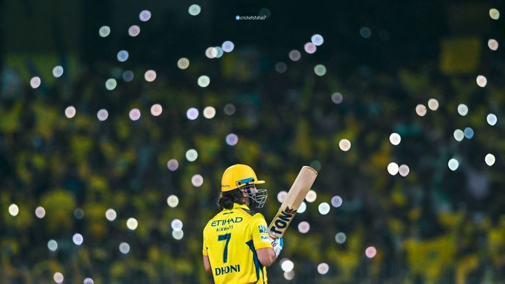

MS Dhoni: The Legend of Indian Cricket
Mahendra Singh Dhoni, fondly known as MSD

MSD, is one of the greatest cricketers India has ever produced. His journey from a small town in Jharkhand to becoming one of the most successful captains in the history of Indian cricket
Here's a time line of Mahendra Singh Dhoni
- 1981 - Birth and Early Life
- 2004 - International Debut Made his ODI debut for India on December 23, 2004, against Bangladesh.
- 2007 - Captaincy and T20 World Cup Victory
- 2008-2011 - Rise as Captain & World Cup Glory
- 2013 - ICC Champions Trophy Triumph
- 2016 - Stepping Down as Captain
- 2020 - Retirement from cricket team
- IPL Success (2008 - Present)